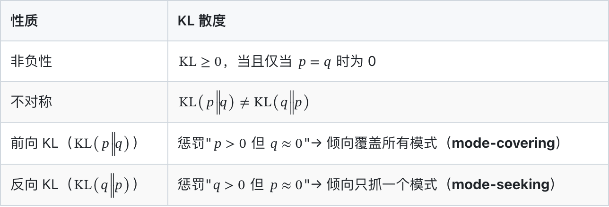
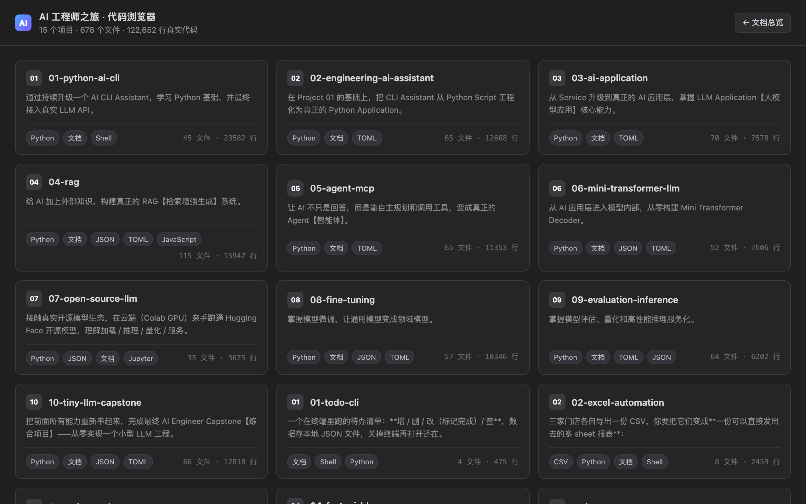
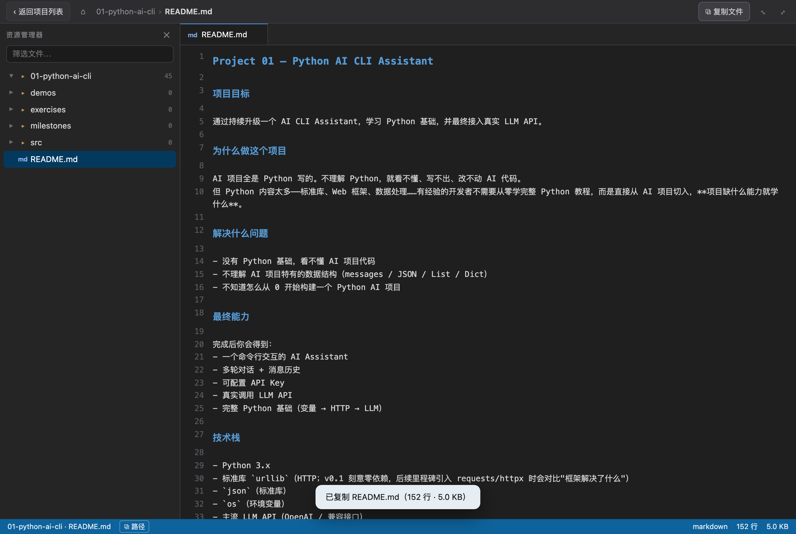
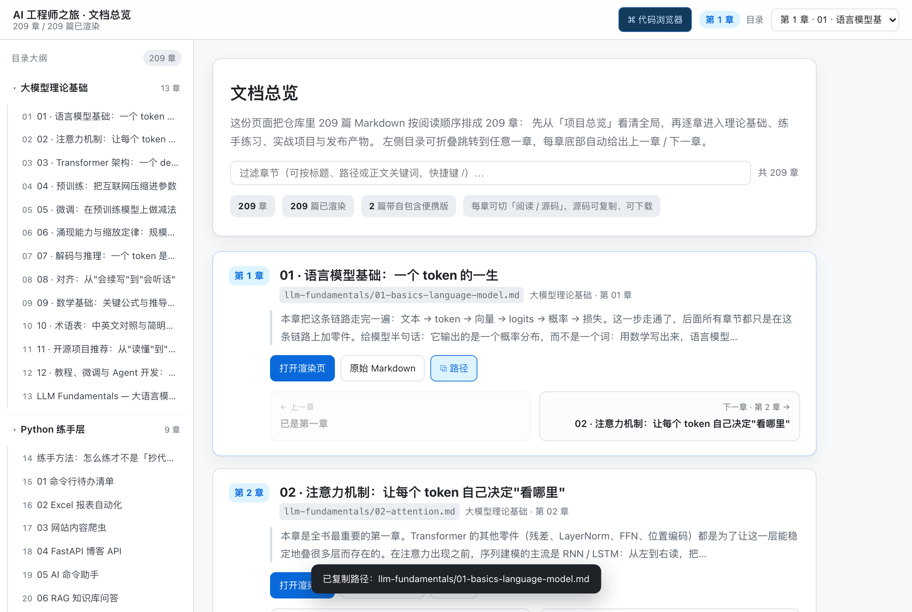
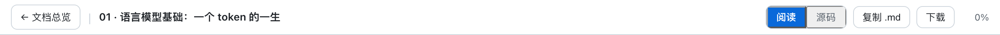
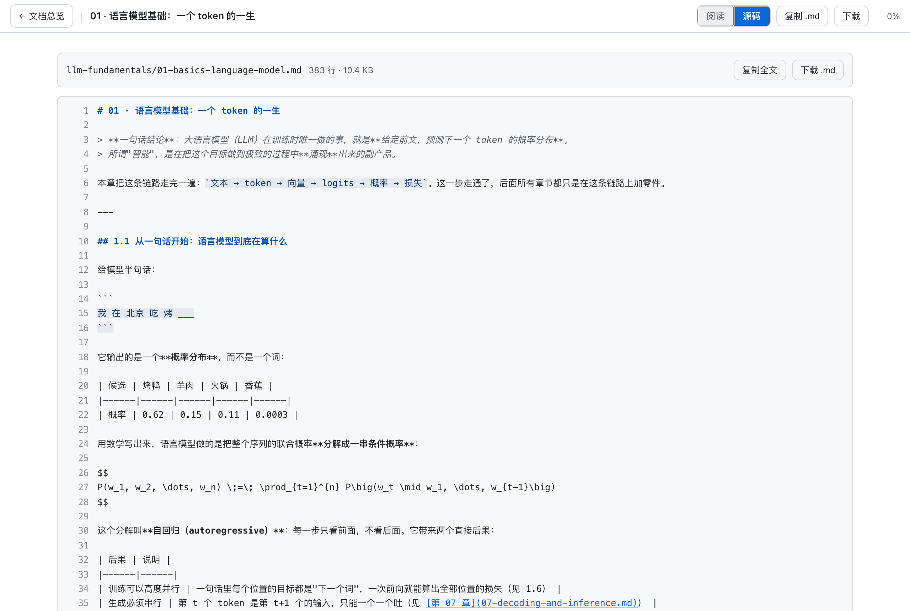

AI Engineer Journey
Project First — 通过连续项目逐步构建 AI Engineer 能力
项目定位
面向有 Java / 前端基础、但 Python 和 AI 基础薄弱的开发者， 通过 10 个连续项目，从 Python 基础一路学到 AI Application、RAG、Agent、 PyTorch、Transformer、微调、评估、量化、部署，并最终自己实现 Tiny LLM。
这不是课程，不是知识库，是一组持续演进、可以运行、可以展示、可以继续扩展的工程项目。
Project First 原则
Project
>
Milestone
>
Knowledge
>
Code
>
Practice
>
Documentation项目遇到问题 → 学习知识 → 知识进入代码 → 运行验证 → 形成能力 → 进入下一个项目
10 个项目路线
| # | 项目 | 核心能力 | 状态 |
|---|---|---|---|
| 01 | Python AI CLI Assistant | Python 基础 + 真实 LLM API | 🔄 |
| 02 | Engineering AI Assistant | Python 工程化 + FastAPI | ✅ |
| 03 | AI Application | Prompt / Streaming / Function Calling | ✅ |
| 04 | AI Knowledge Base / RAG | Embedding / Chunk / Vector DB / RAG | ✅ |
| 05 | Research Agent / MCP | Agent / Tool / MCP Protocol | ✅ |
| 06 | Mini Transformer / LLM | 从零 autograd / Attention / Transformer | ✅ |
| 07 | Open Source LLM | Hugging Face / Tokenizer / 本地推理 | 🔄 |
| 08 | LoRA / QLoRA Fine-Tuning | SFT / LoRA / QLoRA | ✅ |
| 09 | LLM Evaluation / Inference | 评估 / 量化 / 服务化 | ✅ |
| 10 | Tiny LLM Capstone | 从零实现小型 LLM（Tokenizer → Serving 全链路） | ✅ |
状态列指内容状态：✅ 已完成 / 🔄 进行中 / 📝 草稿 / ⬜ 未开始。 「我是否真的学会了」另记在 PROGRESS.md 的学习进度轨 —— 文档就绪 ≠ 已掌握。
仓库结构
ai-engineer-journey/
│
├── README.md # 本文件
├── ROADMAP.md # 10 项目路线图
├── PROGRESS.md # 双轨进度（学习进度 / 内容生产）
├── KNOWLEDGE-MAP.md # 能力关系网（只展示关联，不复制正文）
├── CONTRIBUTING.md # 维护规范（单一事实源 / 命名 / 分级 / Git 约定）
├── LICENSE
├── .gitignore
│
├── mistakes/ # 错题本：真实踩过的坑（日期 + 原因 + 修复）
│ └── README.md
│
├── llm-fundamentals/ # 基础理论层：大模型原理教材（12 章 + 可运行 demo + 真实配图）
│ # 定位见下方「基础知识层」一节；projects/ 仍是唯一事实源
│
├── python-practice/ # 练手层：6 个入门动手练习 + 07 延伸阅读（01–04 可跑，05/06 指路）
│ # 定位见下方「练手项目层」一节
│
├── audit/ # 仓库体检档案：每期一次真实运行的全面体检 + 建议清单
│
├── projects/ # 核心内容（唯一事实源）
│ ├── 01-python-ai-cli/
│ │ ├── README.md # 项目主页（必须对齐规范模板）
│ │ ├── milestones/ # 学习里程碑（Project First 模板）
│ │ │ ├── 01-variables.md
│ │ │ ├── 02-list-dict-json.md
│ │ │ └── ...（共 10 个）
│ │ ├── exercises/ # 配套练习（01-basic 已有题，02/03/04 待播种）
│ │ └── src/ # 项目代码
│ ├── 02-engineering-ai-assistant/
│ └── ...（共 10 个项目）
│
└── publishing/ # 对外发布内容（输出层，不是知识源）
├── articles/ # 课程学习笔记型文章
├── tutorials/ # 独立成篇的图文教程（md + html + assets/）
└── finetune-series/ # 微调系列草稿库（未校对，择优转正为 tutorials）维护工具（scripts/）
| 脚本 | 作用 |
|---|---|
check_links.py --strict | 死链 + 坏图体检（CI 也在跑） |
audit.py | 全仓库体检：骨架完整性 / 证据链 / 配图 / 文档漂移 / 密钥；--tests 可实跑全部测试 |
check_repos.py | 学习资源体检：把文档里推荐的 GitHub 仓库逐个探测（可访问 / 星标 / 是否归档 / 是否搬家 / 最近提交 / 是否维护模式）。不需要 API token |
render_terminal.py | 把真实 stdout 渲染成终端风格 PNG（截图有据可依） |
md_to_tutorial_html.py | 教程 Markdown → HTML 同款排版 |
build_docs_html.py | 批量渲染：把全部（或指定子集）Markdown 转成 publishing/html/docs/ 下的 HTML 树，并自校验链接 |
gen_doc_index.py | 把全部文档重排成「第 1 章…第 N 章」的文档式总览页 publishing/html/index.html：左侧可折叠目录大纲、滚动高亮当前章节、章节下拉快跳、搜索过滤、每章底部上一章 / 下一章链式导航、一键复制文档路径 |
md_to_book_html.py | 单篇渲染器：顶栏（返回总览 / 阅读·源码切换 / 复制 / 下载）、自动抽取 h2/h3 生成侧边目录大纲、阅读进度条与百分比、每章末尾「上一节 / 下一节」链式导航、代码块一键复制、图片灯箱、宽表横滚、移动端目录抽屉；--relative-images 走 base64 内嵌的自包含单文件版 |
gen_ide_browser.py | 代码浏览器：把 10 个项目 + 4 个练手项目 + scripts/ 的真实源码（678 个文件 / 12.26 万行）全部内嵌，产出一个自包含单文件 IDE 界面 publishing/html/ide.html |
verify_pages.js | 站点交互实测：用真实 Chromium 走一遍三张页面的交互（返回总览、阅读↔源码切换、灯箱、复制反馈、hash 路由与浏览器前进后退、深链直达），并顺带产出 publishing/site-assets/ 里的截图 |
latex_mathml.py | 公式渲染：构建期把 $…$ / $$…$$ 里的 LaTeX 转成浏览器原生 MathML（分数/根式/上下标/矩阵/\text 中文混排/\operatorname/\mathbb/间距与箭头），运行时零依赖 |
verify_math_layout.js | 公式版式实测：用真实 Chromium 量「公式是否横排、是否溢出行容器、行内混排是否撑歪行高」，桌面 1280px + 移动 390/768px 三个视口 |
shot_math.js | 用真实 Chromium 截取公式渲染截图（llm-fundamentals/assets/math-render-*.png 的来源） |
公式渲染：文档里的 $…$（行内）与 $$…$$（行间）在构建期就转成了浏览器原生的 MathML，随页面一起落地——不引 CDN、不塞 KaTeX 字体，断网双击照样排版正确。 行间公式居中且过长时在容器内横向滚动（窄屏先自动缩字号），行内公式与中文正文基线对齐。

代码浏览器：publishing/html/ide.html 打开就是项目列表，点进某一项目后是 IDE 布局——左侧可折叠文件树（支持筛选、展开/折叠全部）、右侧带语法高亮的代码区 （标签页、行号、面包屑、底部状态栏），深色主题、响应式，同样零依赖、双击即开。 顶栏有「⧉ 复制文件」一键复制当前文件的完整内容（file:// 下 Clipboard API 被拒时 自动退回 execCommand，不会变成一个按不动的假按钮），状态栏可复制文件路径。 地址栏就是状态：ide.html#/01-python-ai-cli/README.md 可以直达某个文件， 浏览器前进 / 后退也真的能用来在「项目列表 ↔ 项目 ↔ 文件」之间来回走。 数据源是构建时从仓库真实采集的（不含 .venv / node_modules / 二进制 / 权重）， 改完代码重跑 python3 scripts/gen_ide_browser.py 即可刷新。


本地阅读：publishing/html/index.html 是入口，209 篇文档全部以渲染后的页面打开 （publishing/html/docs/…，与源目录同构；图片按相对路径指回源树，零外部依赖、双击即开）。 每个章节页的顶栏都有「← 文档总览」，并且带着该章的锚点回去（index.html#ch-47）， 落回总览里的第 47 章而不是被扔回页面顶部。



索引里带紫色 <code>便携版</code> 标签的两篇（python-practice/07-延伸阅读、 llm-fundamentals/12-tutorials-and-agent）是 base64 内嵌的自包含单文件， 存在镜像树的同名 *.portable.html 里——图片全在文件内，拷到别处、发给别人、断网都能双击打开， 是这两篇的便携阅读副本；其余文档想拷走单篇，用 md_to_book_html.py 现生成。
关于「原始 Markdown」：浏览器不认识 .md，双击只会把源码当纯文本摊开， 而索引里原先那条「原始 .md」链接连文件都找不到（路径按仓库根算，却从 publishing/html/ 解析，209 条全是 404）。现在改成打开该文档在渲染页里的源码视图：带行号、 有 Markdown 高亮、可一键复制、可下载成 .md，与阅读视图用顶栏的「阅读 / 源码」随时互切 （快捷键 S）。同一页两副面孔，就不用再维护第二棵文件树。
单一事实源
所有知识只维护在
projects/*/milestones/中。其他目录只做引用、关联或派生输出。
禁止出现平行知识体系：curriculum/、labs/、knowledge/、assessments/、progress/。
基础知识层
llm-fundamentals/ 是基础理论层：把 Transformer、注意力、预训练/微调、涌现、推理优化、对齐等原理系统整理成 12 章笔记，每章配 Mermaid 图、公式推导、术语表与真实运行出来的配图（终端截图 + 公式计算绘图，均可复现）。
- 与实践层的关系：
llm-fundamentals/讲为什么这么设计，projects/*/milestones/讲怎么跑起来。两者互相引用，不重复正文。 - 目录内自带
demos/（numpy 实现，无需 GPU）与demos/make_figures.py（重建全部配图）。 - 第 11 章把 10 个开源项目对应到具体章节，并给出"跑通的标志"。
- 第 12 章按「学 / 调 / 造」三条线整理教程课程、微调框架、Agent 开发框架，星标与维护状态全部由
scripts/check_repos.py当场核验（含 2026 年的生态洗牌与仓库迁移对照表）。
练手项目层
python-practice/ 是动手练手层：6 个按难度递进的小练习，目标是「一个周末能跑通一个」，用它们把 Python 本身的语法、文件、网络、Web 框架各走一遍。
| # | 练习 | 难度 | 代码位置 |
|---|---|---|---|
| 01 | 命令行待办清单 | ●○○ 入门 | 🏠 本目录可跑（纯标准库） |
| 02 | Excel 报表自动化 | ●●○ 进阶 | 🏠 本目录可跑（pandas） |
| 03 | 网站内容爬虫 | ●●○ 进阶 | 🏠 本目录可跑（requests + bs4） |
| 04 | FastAPI 博客 API | ●●○ 进阶 | 🏠 本目录可跑（FastAPI + pytest） |
| 05 | AI 命令助手 | ●●● 挑战 | → projects/01 |
| 06 | RAG 知识库问答 | ●●● 挑战 | → projects/04 |
| 07 | 延伸阅读：书单与读法 | 读物 | 🏠 不占练习配额：Python 学习路线 + 读生产代码四阶梯 + Java 对照表 |
- 与另外两层的关系：
python-practice/要的是会写，projects/要的是做出来，llm-fundamentals/要的是想明白。 - 05 / 06 的完整实现已由
projects/01、projects/04承担，本层不重复实现，只给指路牌与冷启动路线。 - 07 不是练习，是「练完前四个之后读什么、怎么读」的书单与方法论；继续往大模型 / 微调 / Agent 方向走见
llm-fundamentals/12。 - 01–04 每个都遵循同一套可复现约定：固定随机种子、
demo.sh/demo.py一键跑、原始 stdout 入库、截图由scripts/render_terminal.py从真实输出渲染（不是手截的）。 - 先读
python-practice/00-how-to-practice.md——讲「怎么练才不是抄代码」，比任何一个练习本身都重要。
技术术语规范
所有教学内容中的英文技术术语必须优先使用：英文名称【主流中文名称】
例如：Embedding【向量嵌入】、Token【词元】、Attention【注意力机制】、Fine-Tuning【微调】、Quantization【量化】
如何开始
# 1. 读第一个项目主页
open projects/01-python-ai-cli/README.md
# 2. 跑项目
cd projects/01-python-ai-cli/src
cp .env.example .env # 填入真实 API Key
python3 main.py
# 3. 学 Milestone
open projects/01-python-ai-cli/milestones/01-variables.md安全约定
- API Key 只通过环境变量 /
.env提供 .env永不入库，仓库只有.env.example
双远程
GitHub（origin）+ Gitee（gitee），每次提交双推。
License